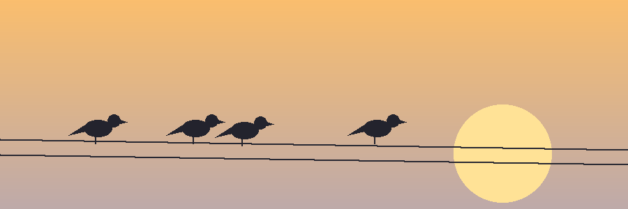

Kenapa burung kota?
Orang biasanya mengira burung liar hanya ada di hutan atau kebun binatang. Padahal di pinggir kali, taman RT, bahkan di balkon apartemen, ada belasan spesies yang lewat setiap pagi. Situs ini mengumpulkan catatan pengamatan sederhana supaya siapa saja bisa mulai mengenali tetangga bersayap di sekitarnya.
Tidak perlu teropong mahal. Mata, buku catatan, dan kesabaran sekitar satu jam sudah cukup.
Aturan dasar pengamat pemula
- Datang pagi, sekitar pukul 06.00 sampai 09.00, saat burung paling aktif mencari makan.
- Jaga jarak dan jangan mengejar burung; mereka pergi kalau merasa diburu.
- Tulis apa yang benar-benar terlihat: ciri warna, ukuran, suara, dan tempat hinggap.
Peta situs
Halaman yang tersedia
- Daftar Spesies: tabel burung yang umum ditemui beserta ciri singkatnya.
- Lapor Pengamatan: formulir untuk mencatat burung yang kamu lihat.